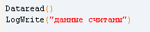

Автоматизированное тестирование средствами AutoIT
Цель: Рассмотреть инструментарий приложения AutoIT для автоматизированного тестирования приложений.
Автоматизированное тестирование программного обеспечения — часть процесса тестирования на этапе контроля качества в процессе разработки программного обеспечения. Оно использует программные средства для выполнения тестов и проверки результатов выполнения, что помогает сократить время тестирования и упростить его процесс.
Наиболее распространенной формой автоматизации является тестирование приложений через графический пользовательский интерфейс. Популярность такого вида тестирования объясняется двумя факторами: во-первых, приложение тестируется тем же способом, которым его будет использовать человек, во-вторых, можно тестировать приложение, не имея при этом доступа к исходному коду.
Установка
Для установки программы запустите файл autoit-v3-setup.exe, который находится в папке … или скачайте с официального сайта AutoIt. После запуска файла, откроется окно с кратким описанием версии программы.
На следуещем шаге идет ознакомление с лицензионным соглашением.
Далее пользователь выбирает одну из двух функций по умолчанию для открытия файлов: запуск скрипта или редактирование скрипта. Выберем режим редактирования, при запуске неизвестного скрипта имеется вероятность того, что скрипт будет работать некорректно.
На следующем этапе выбирается вид установки. В данном случае выставляем полную установку всех компонентов приложения.
После выбора типа установки выбирает каталог, куда будет установлена программа.
После выбора всех опций начинается установка приложения.

После завершения установки, будет сообщено об успешности процесса установки, а также предложат посмотреть описание версии установленного приложения.
На этом установка приложения AutoIT завершена. Далее перейдем к запуску самого приложения и созданию тестового скрипта.
Запуск
После установки программы, запускаем приложение SciTE ScriptEditor с помощью ярлыка на рабочем столе или в меню пуск. Данная утилита предназначена для создания и изменения скриптов в AutoIT.

Если автоматически не был создан новый документ, то создаем его с помощью кнопки «Создать новый» на панели инструментов или выбрать соответствующий пункт в меню «File».
Задание 1:
Произведите установку и запустите средство автоматизированного тестировани AutoIT
Создание функции логирования
Функция логирования одна из самых важных в процессе тестирования. Во-первых, она дает необходимый специалисту по тестированию отчет. Во-вторых, на ранней стадии создания автоматизированного теста логирование можно использовать для отладки самого теста.
Для того чтобы создать осуществить логирование, создадим файл log.txt, в который будут сохраняться записи о процессе тестирования. Далее, перейдем к редактированию кода программы. И создадим следующую функцию.
Аргумент $text – это строка, которую будет выводить программа.
Далее, в переменную $hFile указывается имя файла, и режим, в котором будет открыт файл.
Может быть комбинацией следующих значений:
0 = (по умолчанию) Открыть только для чтения
1 = Открыть только для записи в конец файла
2 = Открыть только для записи в конец файла, удалив предыдущее содержание
8 = Создать структуру папок, если путь к файлу не существует (см. примечания).
Следующей строкой идет метод записи в файл, сперва указывается переменная с именем файла и режимом доступа к нему, а далее указывается время до миллисекунд и текст, который укажет пользователь в качестве аргумента.
В последней строке закрывается соединение с файлом.
Задание 2:
По аналогии создайте функции логирования хода тестирования.
Получение данных из документа
Создадим документ в MS Excel с названием test.xls. Заполним данными, которые будут обрабатываться при тестировании.
В первом и втором столбцах указываются операнды, а в третьем столбце указывается ожидаемый результат.
Далее создадим отдельный скрипт Data.au3, который будет отвечать за считывание данных из данного документа. В качестве основы скрипта возьмем готовый пример считывания столбца из официальной документации и внесем небольшие изменения.
В начале добавим стандартный скрипт для работы с документами в формате xls. Для этого напишем следующую строку в начале скрипта.
Создадим функцию, которая будет считывать данные в массивы, все последующие изменения будут добавляться внутрь данной функции.
Далее создадим новое подключение к документу внутри функции Dataread. В переменную $oAppl запишем значение метода открытие файла MS Excel. После чего создадим обработчик условия, на случай возникновения ошибки.@error - состояние флага макроса, которое вызывается автоматически.
Следующим шагом создадим переменную $oWorkbook, которая открывает документ MS Excel. Для данной функции также напишем обработчик условия, который выведет сообщение об ошибке и закроет среду MS Excel.
После того как необходимый документ с данными будет открыт, приступаем к чтению данных. Для этого в глобальную переменную $nRa запишем данные полученные методом _Excel_RangeRead из столбца А.
Самостоятельно добавьте переменные $nRb и $nRc, в которые будут считаны данные со столбцов B и C.
Далее создадим проверку условия ошибки чтения.
В завершении функции получим количество записей в массиве $nRA, данное значение является количеством тестов, которые будут проведены при тестировании.
На этом создание и настройка окружения закончена, переходим к созданию самого теста.
Задание 3:
По аналогии создайте получение данных из документа Excel
Создание теста
После того, как созданы подготовительные этапы, переходим к созданию автоматизированного теста. Переходим к скрипту Calc.au3.
В начале программы добавим ссылку на скрипт Data.au3, который отвечает за считывание тестовых данных из файла test.xls. Для этого допишем следующую строку:
После чего вызовем функцию Dataread(), которую создали ранее. А также добавим вызов функцию LogWrite, для записи информации, о том, что данные были считаны.

Следующим шагом объявим основные переменные тестового приложения.
Array – предназначена для хранения номеров непройденных тестов, начальный размер массива равен одному, но в последствии он будет увеличиваться автоматически по мере увеличения непройденных тестов.
Далее идут счетчики для различных циклов $var и $i
Переменная $nX в дальнейшем будет нужна для сравнения результатов тестирования.
Следует обратить внимание, что в AutoIT есть только не типизированный тип данных Variant, который принимает тот тип данных, который возвращается из функции.
После описания переменных можно приступить к написанию самого теста. Начать следует с запуска приложения. В данном случае тестируется калькулятор. Для запуска приложения используется метод Run(), в качестве аргументов к которому используются путь к файлу приложения. Так как калькулятор является системным приложением, то можно не указывать путь к файлу целиком, а указать только название файла.
После запуска приложение, возникает потребность в обращении к элементам управления приложения. Для обращения к ним используется имена классов объктов, например кнопки или строка ввода. Но названия классов для разных видов операционных систем могут отличаться, для того, чтобы тест был кроссплатформенным необходимо дописать условие выбора. Напишем оператор Swicth с версиями операционной системы. Переменная @OSVersion получает автоматически версию операционной системы. Далее в блоке Caseопишем условия выбора.

Далее приступаем к работе непосредственно с самим калькулятором. Создадим начало цикла, в котором $n – количество записей полученных из файла test.xls. После выводим в лог-файл номер теста, который совпадает и итерациями цикла. И обнуляем переменную $nX, которая в последствии будет использоваться для сравнения результатов.
Следующим этапом внутри цикла указываем проверку окна на активность. Используем стандартный метод WinWaitActive, который проверяет активность окна калькулятора, обращаясь по классу, в течении 5 секунд. Если окно не активно, то выдается системное сообщений, о том, что окно не было запущено или было закрыто. После чего станавливается работа тестового приложения.
Внутри условия активности будет располагаться все остальное тело программы. Далее с помощью метода Send() сообщаем калькулятору значение элемента $i из массива первых операндов.
Следующим шагом необходимо указать оператор действия. По причине того, что тестируется только функция сложения, то укажем только одно действие. Для нахождения класса элемента управления используется утилита AutoIT WindowsInfo.
Получение значения кнопок через Windowsinfo
Одной из функций автоматизированных текстов является обращение к элементам управления на форме приложения, или же симуляция их нажатия. Для обращения имеются стандартные методы Send() и ControlClick(). Но для того, чтобы совершить обращение к элементу необходимо узнать его идентификатор. После установки приложения AutoIT была установлена утилита AutoIT Windows Info, предназначенная для сбора информации об элементах управления в окнах.
По причине того, что требуется некоторое время для ввода данных поставим задержку до нажатия клавиши, используя метод Sleep(), установив время на 50 миллисекунд
Далее самостоятельно допишите добавление второго операнда и нажатие кнопки «равно».
Получение данных
Удаление пробела в конце
Удаление последней запятой
Самостоятельно выведите в лог значения полученные при тестирование и ожидаемые.
Проверяем прохождение теста
Самостоятельно напишите очистку формы, с помощью кнопки очистки на форме калькулятора.
Далее необходимо добавить в конце цикла прибавление к счетчику цикла $i. На этом работа с основным циклом завершена, переходим к выводу информации.
Вся информация по тестам хранится в переменных и размере массива. Получаем размер массива, который хранит в себе номера непройденных тестов
Вывод количества тестов и вывод количества непройденных тестов. Переменная $n хранит в себе количество тестовых записей в файле text.xls.
Из значения $b вычитается единица, так как размер массива превышает количество непройденных тестов на один.
Следующим шагом создадим цикл, который выведет номера тестов, которые не были пройдены.

В конце теста добавим вывод сообщения об окончании тестирования.
Первый аргумент является флагом сообщения. Код 4096 задает системный тип окна, которое появляется поверх остальных окон. Далее идут заголовок сообщения и текст.
На этом этапе написание теста закончено, теперь можно перейти к запуску теста. Для этого в меню «Tools» выберите пункт «Go» или нажмите клавишу F5. В ходе выполнения теста произойдет открытие файла test.xls и калькулятора. После завершения работы появится диалоговое окно о завершении тестирования, которое было создано ранее. Далее можно закрыть калькулятор и MSExcel и открыть файл логирования, который был сформирован в ходе выполнения тестирования.
Задание 4:
На основе примера создайте автоматизированный тест.
Контрольное задание
Самостоятельно проведите тестирование программы, соответствующее вашему варианту, на основе созданных тестовых вариантов и заполните отчет.
Вариант задания выбирается по последним двум цифрам в студенческом билете.Требования к отчету об автоматизированном тестировании
- Указание название и функций тестируемого приложения.
- Снимок интерфейса приложения.
- Приложенный файл в формате xls тестовых вариантов используемых при тестировании.
- Приложенный лог-файл, полученный при тестировании.